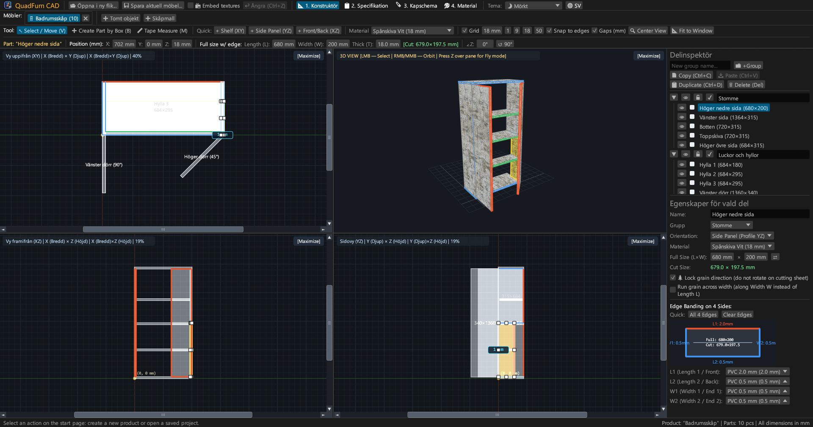
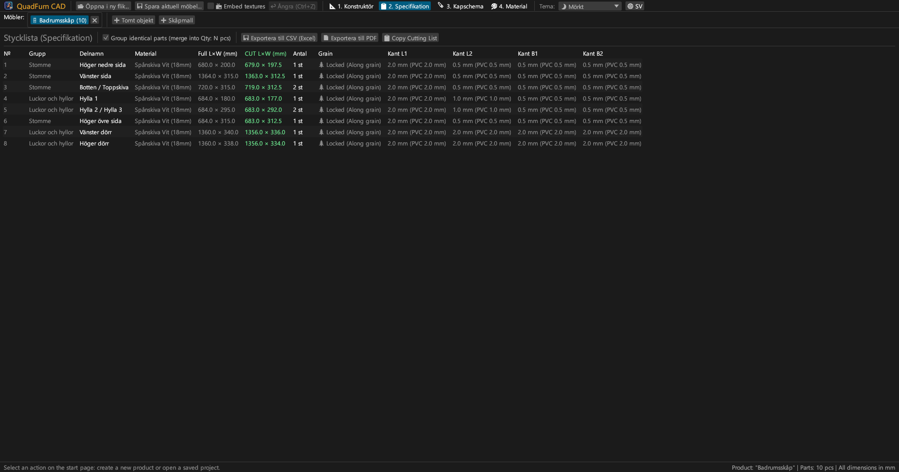
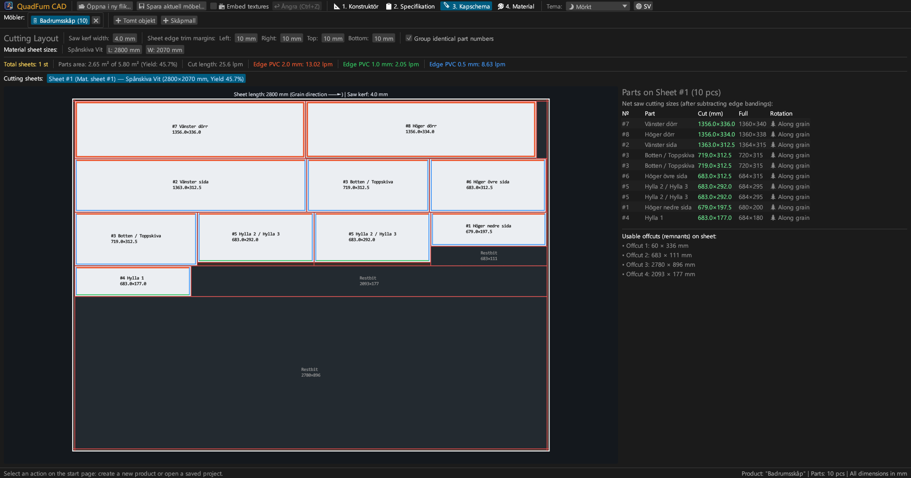
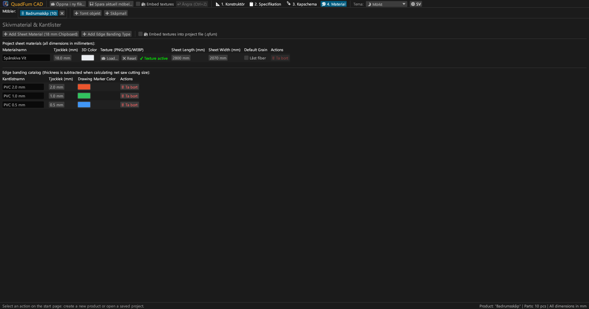
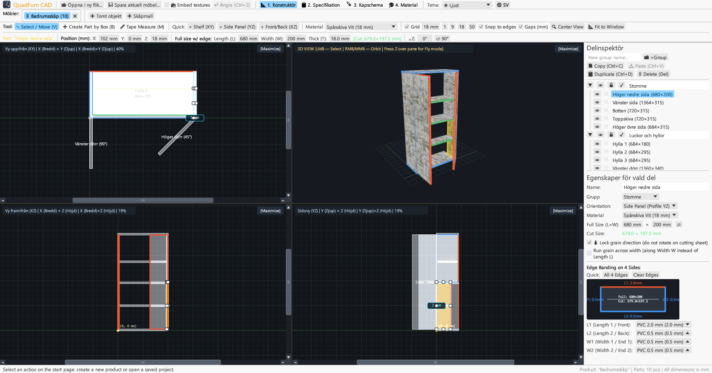
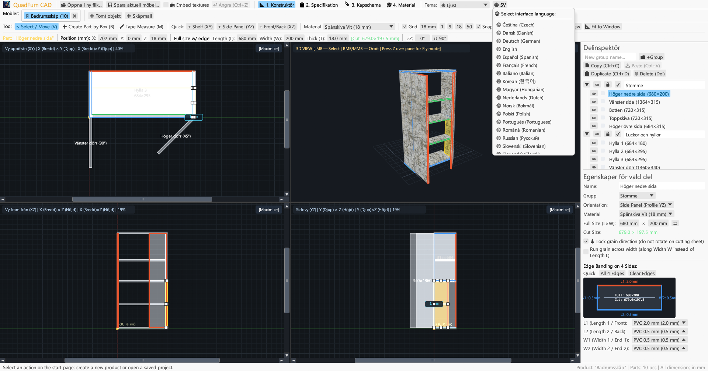

Snabb CAD för finsnickare och möbelfabriker. 4-vyers synkroniserad modellering, formelberäkning, kantlistavdrag och sågplaner.

Förenar 4-vyers ritning, numerisk kontroll och skivoptimering i ett program.
Samtidig redigering i Plan (XY), Front (XZ), Sida (YZ) och 3D med magnetisk låsning och dynamiska avståndsmått.
Direkt inmatning av koordinater (X, Y, Z), mått (L × B × T) och vinkel med formelberäknare (t.ex. 600-4).
Tilldelning av PVC/ABS-kantlist (0,4–2,0 mm) till 4 kanter för att beräkna det exakta nettosågmåttet.
Optimerare som tar hänsyn till ådringsriktning, sågsnitt (4,0 mm), renkapning och hantering av användbara spillbitar.
Arbeta med flera möbler samtidigt. Kopiera och klistra in delar mellan flikar med materialöverföring.
Utskriftsklart A4 Liggande dokument: stycklista, 4-vyers ritningar, sågplaner och materialöversikt med +15 % marginal.





Fristående körbara filer utan externa beroenden.
Portabel körbar fil med ikon, kräver ingen installation.
sudo apt install ./quadfurn_0.2.2_amd64.deb
Universal App-paket för Apple Silicon (M1–M4) och Intel x86_64.
| Tangent | Åtgärd | Område |
|---|---|---|
| V | Välj / Flytta-verktyg (8 handtag, markeringsram) | 2D-vyer |
| B | Skapa del med ram i aktivt plan | 2D-vyer |
| M | Måttband (exakt mätning av avstånd i mm) | 2D-vyer |
| Z | Förstaperson flygläge (WASD) | 3D-fönster |
| ← → ↑ ↓ | Flytta delar med rutnätssteg (Shift för dubbelt steg) | 2D-vyer |
| Ctrl + C / V | Kopiera / klistra in delar (mellan flikar) | Alla flikar |
| Ctrl + D | Duplicera valda delar med förskjutning | Aktivt projekt |
| Ctrl + S | Spara projekt som .qfurn / .json fil | Aktivt projekt |
| Ctrl + Z | Ångra åtgärd (upp till 40 steg) | Aktivt projekt |
| Delete / Backspace | Ta bort valda delar | Aktivt projekt |